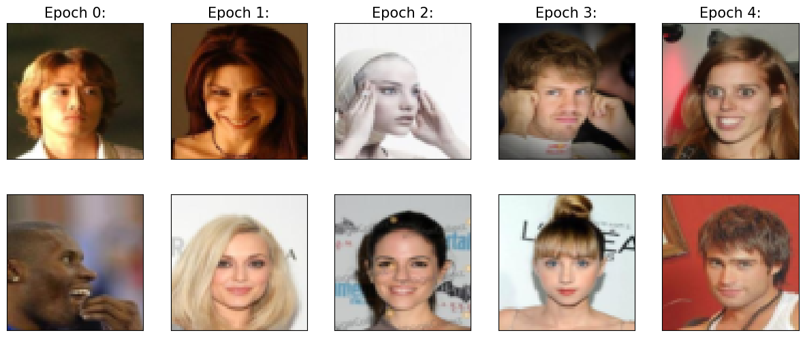
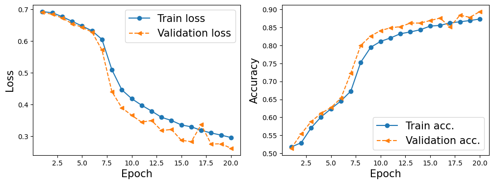
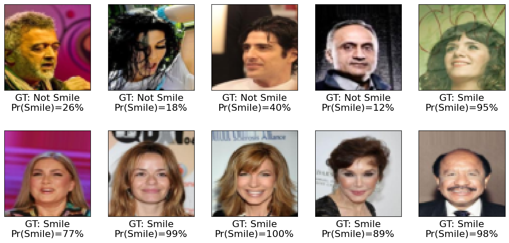

16. Convolutional Neural Network - Celeb Dataset#
from IPython.display import Image as IPythonImage
%matplotlib inline
from IPython.core.display import display
import torch
import torch.nn as nn
import numpy as np
from IPython.display import Image
import matplotlib.pyplot as plt
%matplotlib inline
import os
import pandas as pd
from PIL import Image
from torch.utils.data import Dataset
import torchvision
from torchvision import transforms
from sklearn.model_selection import train_test_split
!mkdir data_faces && wget https://s3-us-west-1.amazonaws.com/udacity-dlnfd/datasets/celeba.zip
--2024-10-08 02:14:46-- https://s3-us-west-1.amazonaws.com/udacity-dlnfd/datasets/celeba.zip
Resolving s3-us-west-1.amazonaws.com (s3-us-west-1.amazonaws.com)... 52.219.220.152, 52.219.121.56, 52.219.193.24, ...
Connecting to s3-us-west-1.amazonaws.com (s3-us-west-1.amazonaws.com)|52.219.220.152|:443... connected.
HTTP request sent, awaiting response... 200 OK
Length: 1443490838 (1.3G) [application/zip]
Saving to: ‘celeba.zip’
celeba.zip 100%[===================>] 1.34G 85.9MB/s in 21s
2024-10-08 02:15:08 (65.1 MB/s) - ‘celeba.zip’ saved [1443490838/1443490838]
import zipfile
with zipfile.ZipFile("celeba.zip","r") as zip_ref:
zip_ref.extractall("data_faces/")
root = 'data_faces/img_align_celeba'
img_list = os.listdir(root)
print(len(img_list))
202599
from google.colab import drive
drive.mount('/content/drive')
Mounted at /content/drive
!ls "data_faces/"
img_align_celeba
# Download all files in the Google Drive folder
!gdown --folder https://drive.google.com/drive/folders/1zIhmZAbpt9R3aM09wu3J1CixK0kluwMb -O data_faces/
Retrieving folder contents
Processing file 1W6PUogOswAGjWc3TS6acWewkGw7v72VO identity_CelebA.txt
Processing file 1bXoazwXbKK2dWxu_skhwv156Uq-gNZGe list_attr_celeba.txt
Processing file 1RE8Ojs0gs8BxPxd7ZtbmE7-_lZT1wNHK list_bbox_celeba.txt
Processing file 1xojfv4rXGdR7TB7-peFPrUFY-MLZQa3m list_eval_partition.txt
Processing file 18OZpHkC4Bpi2YMnewN9yriwLogAiVrsP list_landmarks_align_celeba.txt
Processing file 1Uh_UHnkJmmkPuYPmiKYcp2Ookum6JHEI list_landmarks_celeba.txt
Retrieving folder contents completed
Building directory structure
Building directory structure completed
Downloading...
From: https://drive.google.com/uc?id=1W6PUogOswAGjWc3TS6acWewkGw7v72VO
To: /content/data_faces/copied_celeba/identity_CelebA.txt
100% 3.42M/3.42M [00:00<00:00, 24.3MB/s]
Downloading...
From: https://drive.google.com/uc?id=1bXoazwXbKK2dWxu_skhwv156Uq-gNZGe
To: /content/data_faces/copied_celeba/list_attr_celeba.txt
100% 26.7M/26.7M [00:00<00:00, 42.8MB/s]
Downloading...
From: https://drive.google.com/uc?id=1RE8Ojs0gs8BxPxd7ZtbmE7-_lZT1wNHK
To: /content/data_faces/copied_celeba/list_bbox_celeba.txt
100% 6.08M/6.08M [00:00<00:00, 26.6MB/s]
Downloading...
From: https://drive.google.com/uc?id=1xojfv4rXGdR7TB7-peFPrUFY-MLZQa3m
To: /content/data_faces/copied_celeba/list_eval_partition.txt
100% 2.84M/2.84M [00:00<00:00, 20.3MB/s]
Downloading...
From: https://drive.google.com/uc?id=18OZpHkC4Bpi2YMnewN9yriwLogAiVrsP
To: /content/data_faces/copied_celeba/list_landmarks_align_celeba.txt
100% 12.2M/12.2M [00:00<00:00, 65.5MB/s]
Downloading...
From: https://drive.google.com/uc?id=1Uh_UHnkJmmkPuYPmiKYcp2Ookum6JHEI
To: /content/data_faces/copied_celeba/list_landmarks_celeba.txt
100% 12.4M/12.4M [00:00<00:00, 60.9MB/s]
Download completed
# Move all files from copied_celeba to the data_faces root folder
!mv data_faces/copied_celeba/* data_faces/
# Remove the empty copied_celeba folder
!rmdir data_faces/copied_celeba
!ls data_faces/
identity_CelebA.txt list_bbox_celeba.txt list_landmarks_celeba.txt
img_align_celeba list_eval_partition.txt
list_attr_celeba.txt list_landmarks_align_celeba.txt
class to create torchvision objects
import os
import pandas as pd
from PIL import Image
from torch.utils.data import Dataset
from torchvision import transforms
class CelebADataset(Dataset):
def __init__(self, image_ids, attr_labels, img_folder, transform=None):
self.image_ids = image_ids.tolist() # Convert to list to avoid .iloc issues
self.attr_labels = attr_labels.to_numpy() # Convert to NumPy array for easier indexing
self.img_folder = img_folder
self.transform = transform
def __len__(self):
return len(self.image_ids)
def __getitem__(self, idx):
# Load image using list indexing
img_id = self.image_ids[idx]
img_path = os.path.join(self.img_folder, img_id)
image = Image.open(img_path)
# Apply transformations if any
if self.transform:
image = self.transform(image)
# Access label from the NumPy array (direct indexing)
label = self.attr_labels[idx] # Access the label using normal NumPy indexing
return image, label
# Path to your dataset folder
image_path = "/content/data_faces"
img_folder = os.path.join(image_path, 'img_align_celeba')
# Paths to the required files
attr_file = os.path.join(image_path, 'list_attr_celeba.txt')
partition_file = os.path.join(image_path, 'list_eval_partition.txt')
# Step 1: Load the attributes and partition data
attributes = pd.read_csv(attr_file, delim_whitespace=True, skiprows=1)
partition = pd.read_csv(partition_file, delim_whitespace=True, header=None, names=['image_id', 'partition'])
# Step 2: Filter for the 'Smiling' attribute (32nd column)
smiling_attr = attributes[['Smiling']] # The "Smiling" attribute is already labeled
smiling_attr = smiling_attr.applymap(lambda x: 1 if x == 1 else 0) # Convert -1 to 0 for binary classification
# Step 3: Split the dataset into train, validation, and test sets based on partition file
train_data = partition[partition['partition'] == 0] # Train set
valid_data = partition[partition['partition'] == 1] # Validation set
test_data = partition[partition['partition'] == 2] # Test set
# Extract the image ids and corresponding labels (Smiling or not)
train_labels = smiling_attr.loc[train_data['image_id']]
valid_labels = smiling_attr.loc[valid_data['image_id']]
test_labels = smiling_attr.loc[test_data['image_id']]
# Step 4: Create Transformations (resize and convert to tensor)
transform = transforms.Compose([
transforms.Resize((64, 64)),
transforms.ToTensor(),
])
# Step 5: Create Dataset Objects using the custom CelebADataset class
celeba_train_dataset = CelebADataset(train_data['image_id'], train_labels['Smiling'], img_folder, transform)
celeba_valid_dataset = CelebADataset(valid_data['image_id'], valid_labels['Smiling'], img_folder, transform)
celeba_test_dataset = CelebADataset(test_data['image_id'], test_labels['Smiling'], img_folder, transform)
# Print the dataset sizes
print('Train set:', len(celeba_train_dataset))
print('Validation set:', len(celeba_valid_dataset))
print('Test set:', len(celeba_test_dataset))
<ipython-input-13-0e13e4010fa0>:10: FutureWarning: The 'delim_whitespace' keyword in pd.read_csv is deprecated and will be removed in a future version. Use ``sep='\s+'`` instead
attributes = pd.read_csv(attr_file, delim_whitespace=True, skiprows=1)
<ipython-input-13-0e13e4010fa0>:11: FutureWarning: The 'delim_whitespace' keyword in pd.read_csv is deprecated and will be removed in a future version. Use ``sep='\s+'`` instead
partition = pd.read_csv(partition_file, delim_whitespace=True, header=None, names=['image_id', 'partition'])
<ipython-input-13-0e13e4010fa0>:15: FutureWarning: DataFrame.applymap has been deprecated. Use DataFrame.map instead.
smiling_attr = smiling_attr.applymap(lambda x: 1 if x == 1 else 0) # Convert -1 to 0 for binary classification
Train set: 162770
Validation set: 19867
Test set: 19962
import torchvision.transforms.functional as F
## take 3 examples
fig = plt.figure(figsize=(16, 8.5))
## Column 2: flipping (horizontally)
ax = fig.add_subplot(2, 3, 1)
img, attr = celeba_train_dataset[1]
ax.set_title('Flip (horizontal)', size=15)
imgtmp = img.permute(1, 2, 0)
ax.imshow(imgtmp)
ax = fig.add_subplot(2, 3, 4)
img_flipped = transforms.functional.hflip(img)
img_flipped = img_flipped.permute(1, 2, 0)
ax.imshow(img_flipped)
## Column 3: adjust contrast
ax = fig.add_subplot(2, 3, 2)
img, attr = celeba_train_dataset[2]
imgtmp = img.permute(1, 2, 0)
ax.set_title('Adjust constrast', size=15)
ax.imshow(imgtmp)
ax = fig.add_subplot(2, 3, 5)
img_adj_contrast = transforms.functional.adjust_contrast(img, contrast_factor=2)
img_adj_contrast = img_adj_contrast.permute(1, 2, 0)
ax.imshow(img_adj_contrast)
## Column 4: adjust brightness
ax = fig.add_subplot(2, 3, 3)
img, attr = celeba_train_dataset[3]
ax.set_title('Adjust brightness', size=15)
imgtmp = img.permute(1, 2, 0)
ax.imshow(imgtmp)
ax = fig.add_subplot(2, 3, 6)
img_adj_brightness = transforms.functional.adjust_brightness(img, brightness_factor=1.3)
img_adj_brightness = img_adj_brightness.permute(1, 2, 0)
ax.imshow(img_adj_brightness)
<matplotlib.image.AxesImage at 0x77fcad1b3340>
celeba_train_dataset
<__main__.CelebADataset at 0x77fcb265d2a0>
from torch.utils.data import Subset
celeba_train_dataset = Subset(celeba_train_dataset, torch.arange(16000))
celeba_valid_dataset = Subset(celeba_valid_dataset, torch.arange(1000))
len(celeba_train_dataset)
16000
celeba_train_dataset
<torch.utils.data.dataset.Subset at 0x77fcaaf9b970>
from torch.utils.data import DataLoader
# Create DataLoaders
train_loader = DataLoader(celeba_train_dataset, batch_size=2, shuffle=True)
valid_loader = DataLoader(celeba_valid_dataset, batch_size=2, shuffle=False)
test_loader = DataLoader(celeba_test_dataset, batch_size=2, shuffle=False)
# Now you can use train_loader, valid_loader, and test_loader for your model training/evaluation
for img_batch, label_batch in train_loader:
print("Batch of images:", img_batch.shape)
print("Batch of labels:", label_batch.shape)
break
Batch of images: torch.Size([2, 3, 64, 64])
Batch of labels: torch.Size([2])
import matplotlib.pyplot as plt
# Create a figure for plotting
fig = plt.figure(figsize=(15, 6))
# Number of epochs (times to visualize the batch)
num_epochs = 5
# Loop through epochs
for j in range(num_epochs):
# Get a batch of images and labels from the train_loader
img_batch, label_batch = next(iter(train_loader))
# Ensure you have enough images in the batch (batch size is 2)
if img_batch.shape[0] < 2:
continue # Skip if the batch size is smaller than 2
# First image in the batch
img = img_batch[0]
ax = fig.add_subplot(2, 5, j + 1)
ax.set_xticks([])
ax.set_yticks([])
ax.set_title(f'Epoch {j}:', size=15)
# Convert the image to (H, W, C) format and display
ax.imshow(img.permute(1, 2, 0))
# Second image in the batch
img = img_batch[1]
ax = fig.add_subplot(2, 5, j + 6)
ax.set_xticks([])
ax.set_yticks([])
# Convert the image to (H, W, C) format and display
ax.imshow(img.permute(1, 2, 0))
plt.show()

16.1. Training a DCNN#
torch.manual_seed(1)
# Create DataLoaders
batch_size = 64
train_dl = DataLoader(celeba_train_dataset, batch_size=batch_size, shuffle=True)
valid_dl = DataLoader(celeba_valid_dataset, batch_size=batch_size, shuffle=False)
test_dl = DataLoader(celeba_test_dataset, batch_size=batch_size, shuffle=False)
# CHECK 1
# Get the first image and label from the training dataset
img, label = celeba_train_dataset[0]
# Print the shape of the image tensor
print(f"Image shape: {img.shape}")
print(f"Label: {label}")
Image shape: torch.Size([3, 64, 64])
Label: 1
# CHECK 2
# Get the first batch of images and labels from the train_loader
img_batch, label_batch = next(iter(train_dl))
# Print the shape of the image batch and label batch
print(f"Image batch shape: {img_batch.shape}")
print(f"Label batch shape: {label_batch.shape}")
Image batch shape: torch.Size([64, 3, 64, 64])
Label batch shape: torch.Size([64])
import torch.nn as nn
# Define the model
def MyModel():
model = nn.Sequential()
# Add layers to the model
model.add_module('conv1', nn.Conv2d(in_channels=3, out_channels=32, kernel_size=3, padding=1))
model.add_module('relu1', nn.ReLU())
model.add_module('pool1', nn.MaxPool2d(kernel_size=2))
model.add_module('dropout1', nn.Dropout(p=0.5))
model.add_module('conv2', nn.Conv2d(in_channels=32, out_channels=64, kernel_size=3, padding=1))
model.add_module('relu2', nn.ReLU())
model.add_module('pool2', nn.MaxPool2d(kernel_size=2))
model.add_module('dropout2', nn.Dropout(p=0.5))
model.add_module('conv3', nn.Conv2d(in_channels=64, out_channels=128, kernel_size=3, padding=1))
model.add_module('relu3', nn.ReLU())
model.add_module('pool3', nn.MaxPool2d(kernel_size=2))
model.add_module('conv4', nn.Conv2d(in_channels=128, out_channels=256, kernel_size=3, padding=1))
model.add_module('relu4', nn.ReLU())
#x = torch.ones((4, 3, 64, 64))
#model(x).shape
model.add_module('pool4', nn.AvgPool2d(kernel_size=8))
model.add_module('flatten', nn.Flatten())
#x = torch.ones((4, 3, 64, 64))
#model(x).shape
model.add_module('fc', nn.Linear(256, 1))
model.add_module('sigmoid', nn.Sigmoid())
#x = torch.ones((4, 3, 64, 64))
#model(x).shape
return model
model = MyModel()
model
Sequential(
(conv1): Conv2d(3, 32, kernel_size=(3, 3), stride=(1, 1), padding=(1, 1))
(relu1): ReLU()
(pool1): MaxPool2d(kernel_size=2, stride=2, padding=0, dilation=1, ceil_mode=False)
(dropout1): Dropout(p=0.5, inplace=False)
(conv2): Conv2d(32, 64, kernel_size=(3, 3), stride=(1, 1), padding=(1, 1))
(relu2): ReLU()
(pool2): MaxPool2d(kernel_size=2, stride=2, padding=0, dilation=1, ceil_mode=False)
(dropout2): Dropout(p=0.5, inplace=False)
(conv3): Conv2d(64, 128, kernel_size=(3, 3), stride=(1, 1), padding=(1, 1))
(relu3): ReLU()
(pool3): MaxPool2d(kernel_size=2, stride=2, padding=0, dilation=1, ceil_mode=False)
(conv4): Conv2d(128, 256, kernel_size=(3, 3), stride=(1, 1), padding=(1, 1))
(relu4): ReLU()
(pool4): AvgPool2d(kernel_size=8, stride=8, padding=0)
(flatten): Flatten(start_dim=1, end_dim=-1)
(fc): Linear(in_features=256, out_features=1, bias=True)
(sigmoid): Sigmoid()
)
#----------------------------------------------------------------------------------------------------------
device = torch.device("cuda:0")
#device = torch.device("cpu")
model = model.to(device)
loss_fn = nn.BCELoss()
optimizer = torch.optim.Adam(model.parameters(), lr=0.001)
#----------------------------------------------------------------------------------------------------------
def train(model, num_epochs, train_dl, valid_dl):
model.train()
loss_hist_train = [0] * num_epochs
loss_hist_valid = [0] * num_epochs
accuracy_hist_train = [0] * num_epochs
accuracy_hist_valid = [0] * num_epochs
for epoch in range(num_epochs):
model.train()
for x_batch, y_batch in train_dl:
x_batch = x_batch.to(device)
y_batch = y_batch.to(device)
pred = model(x_batch)[:, 0]
loss = loss_fn(pred, y_batch.float())
loss.backward()
optimizer.step()
optimizer.zero_grad()
loss_hist_train[epoch] += loss.item()*y_batch.size(0)
is_correct = ((pred>=0.5).float() == y_batch).float()
accuracy_hist_train[epoch] += is_correct.sum().cpu()
loss_hist_train[epoch] /= len(train_dl.dataset)
accuracy_hist_train[epoch] /= len(train_dl.dataset)
model.eval()
with torch.no_grad():
for x_batch, y_batch in valid_dl:
x_batch = x_batch.to(device)
y_batch = y_batch.to(device)
pred = model(x_batch)[:, 0]
loss = loss_fn(pred, y_batch.float())
loss_hist_valid[epoch] += loss.item()*y_batch.size(0)
is_correct = ((pred>=0.5).float() == y_batch).float()
accuracy_hist_valid[epoch] += is_correct.sum().cpu()
loss_hist_valid[epoch] /= len(valid_dl.dataset)
accuracy_hist_valid[epoch] /= len(valid_dl.dataset)
print(f'Epoch {epoch+1} accuracy: {accuracy_hist_train[epoch]:.4f} val_accuracy: {accuracy_hist_valid[epoch]:.4f}')
return loss_hist_train, loss_hist_valid, accuracy_hist_train, accuracy_hist_valid
def reinitialize_model_optimizer():
model = MyModel() # Replace with your model definition
optimizer = torch.optim.Adam(model.parameters(), lr=0.001) # Replace with your optimizer
return model, optimizer
model, optimizer = reinitialize_model_optimizer()
model = model.to(device)
# Now proceed with the training
num_epochs = 20
# Use the corrected model and optimizer
hist = train(model, num_epochs, train_dl, valid_dl)
Epoch 1 accuracy: 0.5176 val_accuracy: 0.5140
Epoch 2 accuracy: 0.5292 val_accuracy: 0.5540
Epoch 3 accuracy: 0.5707 val_accuracy: 0.5880
Epoch 4 accuracy: 0.6011 val_accuracy: 0.6110
Epoch 5 accuracy: 0.6237 val_accuracy: 0.6270
Epoch 6 accuracy: 0.6455 val_accuracy: 0.6530
Epoch 7 accuracy: 0.6729 val_accuracy: 0.7230
Epoch 8 accuracy: 0.7531 val_accuracy: 0.8000
Epoch 9 accuracy: 0.7946 val_accuracy: 0.8260
Epoch 10 accuracy: 0.8111 val_accuracy: 0.8410
Epoch 11 accuracy: 0.8207 val_accuracy: 0.8490
Epoch 12 accuracy: 0.8326 val_accuracy: 0.8520
Epoch 13 accuracy: 0.8373 val_accuracy: 0.8620
Epoch 14 accuracy: 0.8435 val_accuracy: 0.8620
Epoch 15 accuracy: 0.8536 val_accuracy: 0.8690
Epoch 16 accuracy: 0.8556 val_accuracy: 0.8760
Epoch 17 accuracy: 0.8627 val_accuracy: 0.8510
Epoch 18 accuracy: 0.8655 val_accuracy: 0.8840
Epoch 19 accuracy: 0.8692 val_accuracy: 0.8780
Epoch 20 accuracy: 0.8733 val_accuracy: 0.8940
!ls
celeba.zip data_faces drive sample_data
!ls -lrth
total 1.4G
-rw-r--r-- 1 root root 1.4G Apr 21 2017 celeba.zip
drwxr-xr-x 1 root root 4.0K Oct 4 13:23 sample_data
drwx------ 6 root root 4.0K Oct 8 02:17 drive
drwxr-xr-x 3 root root 4.0K Oct 8 02:17 data_faces
-rw-r--r-- 1 root root 4.5M Oct 8 02:38 checkpoint.pth
#----------------------------------------------------------------------------------------------#
x_arr = np.arange(len(hist[0])) + 1
fig = plt.figure(figsize=(12, 4))
ax = fig.add_subplot(1, 2, 1)
ax.plot(x_arr, hist[0], '-o', label='Train loss')
ax.plot(x_arr, hist[1], '--<', label='Validation loss')
ax.legend(fontsize=15)
ax.set_xlabel('Epoch', size=15)
ax.set_ylabel('Loss', size=15)
ax = fig.add_subplot(1, 2, 2)
ax.plot(x_arr, hist[2], '-o', label='Train acc.')
ax.plot(x_arr, hist[3], '--<', label='Validation acc.')
ax.legend(fontsize=15)
ax.set_xlabel('Epoch', size=15)
ax.set_ylabel('Accuracy', size=15)
plt.show()

accuracy_test = 0
model.eval()
with torch.no_grad():
for x_batch, y_batch in test_dl:
x_batch = x_batch.to(device)
y_batch = y_batch.to(device)
pred = model(x_batch)[:, 0]
is_correct = ((pred>=0.5).float() == y_batch).float()
accuracy_test += is_correct.sum().cpu()
accuracy_test /= len(test_dl.dataset)
print(f'Test accuracy: {accuracy_test:.4f}')
Test accuracy: 0.8812
pred = model(x_batch)[:, 0] * 100
fig = plt.figure(figsize=(15, 7))
for j in range(10, 20):
ax = fig.add_subplot(2, 5, j-10+1)
ax.set_xticks([]); ax.set_yticks([])
ax.imshow(x_batch[j].cpu().permute(1, 2, 0))
if y_batch[j] == 1:
label = 'Smile'
else:
label = 'Not Smile'
ax.text(
0.5, -0.15,
f'GT: {label:s}\nPr(Smile)={pred[j]:.0f}%',
size=16,
horizontalalignment='center',
verticalalignment='center',
transform=ax.transAxes)
plt.show()

The above is just a starting point.
With some modifications, you should be able to get results similar to the following images
from IPython.display import Image, display
# FIG 1
display(Image(url="https://raw.githubusercontent.com/cfteach/NNDL_DATA621/webpage-src/DATA621/DATA621/images/Fig1_dcnn2.png", width=600))
# FIG 2
display(Image(url="https://raw.githubusercontent.com/cfteach/NNDL_DATA621/webpage-src/DATA621/DATA621/images/Fig2_dcnn2.png", width=600))